ENCONTRO FECHADO · GOOGLE MEET
Escolha o seu horário com a Marcela.
Todas as turmas estão cheias no momento. Novos horários aparecem aqui assim que a Marcela abrir a agenda. Você recebe aviso por e-mail.
Horários no fuso de Brasília. Só quem está na lista participa. A reserva das máquinas acontece no fim de cada encontro, só para quem já pode (Circular confirmada há dez dias).